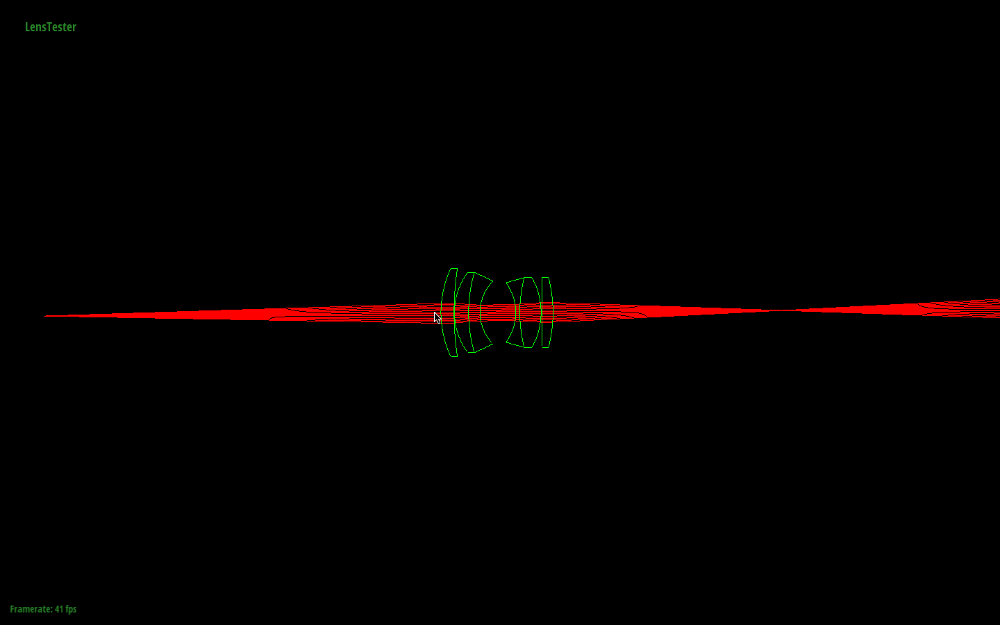

Provide a brief overview of the assignment here.
Part 1: Ray Generation and Intersection
The difference between using a pinhole camera and a fully
simulated lens system really comes down to the fact that in a
lens system, we can have defocused blur. Whereas in a pinhole
system, the entire image will be focused. In addition, using
lenses (and various sensor depths) allows us to change the
field of view, and have a depth of field in our scene. These
changes are what allows 'photographer's perspective' to be
captured in our scene.
|

Lens 1 : trace backward
|
 Lens 2 : trace forward
Lens 2 : trace forward
|
 Lens 2 : trace backward
Lens 2 : trace backward
|
 Lens 4 : trace backward
Lens 4 : trace backward
|
| D-GAUSS F/2 22deg HFOV |
Infinity focus depth is 51.2609 |
Close focus depth is 64.7099 |
True focal length is 50.3582 |
| Wide-angle (38-degree) lens. Nakamura |
Infinity focus depth is 28.7635 |
Close focus depth is 38.4589 |
True focal length is 22.0235 |
| SIGLER Super achromate telephoto, EFL=254mm, F/5.6 |
Infinity focus depth is 188.758 |
Close focus depth is 241.025 |
True focal length is 249.567 |
| Muller 16mm/f4 155.9FOV fisheye lens |
Infinity focus depth is 28.7443 |
Close focus depth is 42.0407 |
True focal length is 9.99142 |
Here are a few problems students have encountered in the past. You will probably encounter these problems at some point, so don't wait until right before the deadline to check that everything is working. Test your website on the instructional machines early!